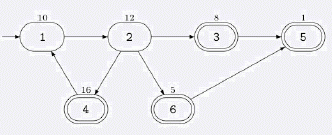

Siruseri 城中的道路都是单向的。不同的道路由路口连接。按照法律的规定， 在每个路口都设立了一个 Siruser
i 银行的 ATM 取款机。令人奇怪的是，Siruseri 的酒吧也都设在路口，虽然并不是每个路口都设有酒吧。Bandit
ji 计划实施 Siruseri 有史以来最惊天动地的 ATM 抢劫。他将从市中心 出发，沿着单向道路行驶，抢劫所有他
途径的 ATM 机，最终他将在一个酒吧庆 祝他的胜利。使用高超的黑客技术，他获知了每个 ATM 机中可以掠取的
现金数额。他希 望你帮助他计算从市中心出发最后到达某个酒吧时最多能抢劫的现金总数。他可 以经过同一路口
或道路任意多次。但只要他抢劫过某个 ATM 机后，该 ATM 机 里面就不会再有钱了。 例如，假设该城中有 6 个
路口，道路的连接情况如下图所示：

市中心在路口 1，由一个入口符号→来标识，那些有酒吧的路口用双圈来表示。每个 ATM 机中可取的钱数标在了
路口的上方。在这个例子中，Banditji 能抢 劫的现金总数为 47，实施的抢劫路线是：1-2-4-1-2-3-5。